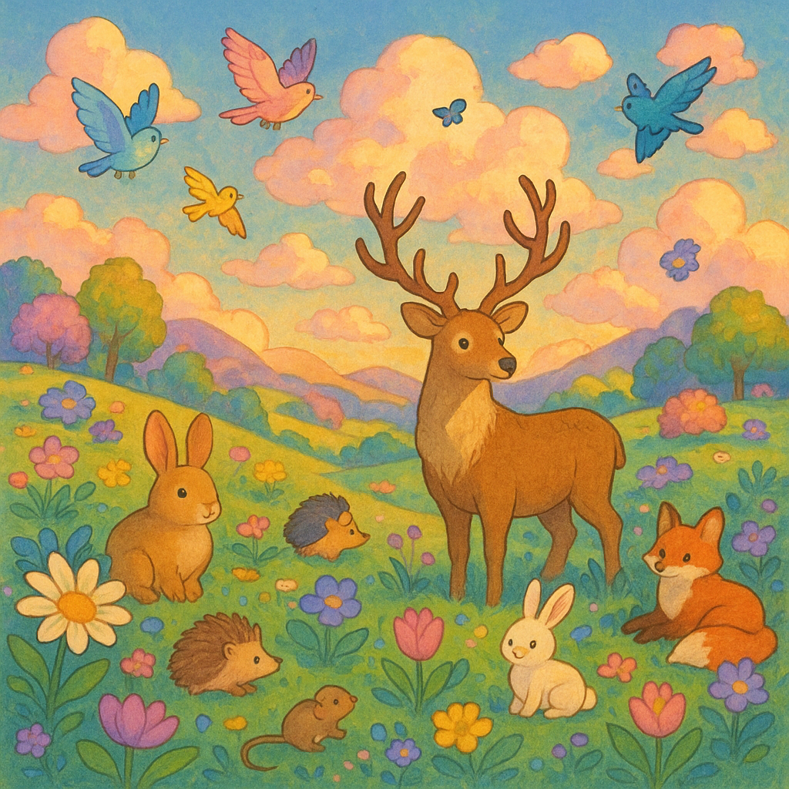

选择遮挡效果
遮挡效果示例
点击上方按钮可切换不同的遮挡效果，查看在同一图片上的不同视觉表现。

原图
效果说明
当前显示原始图片，未应用任何遮挡效果。请点击上方按钮查看不同效果。
CSS代码
/* 未应用任何效果 */使用真实图片展示各种遮挡效果的视觉表现
点击上方按钮可切换不同的遮挡效果，查看在同一图片上的不同视觉表现。
当前显示原始图片，未应用任何遮挡效果。请点击上方按钮查看不同效果。
/* 未应用任何效果 */